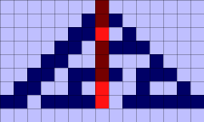

A very simple one-dimensional 2-state rule that can be used to generate random numbers. Every statistical test applied to this rule shows that it has chaotic and random behavior. For example, random numbers could be constructed by collecting a series of bits down the middle of the simulation as shown in red below.

The first time step gives a bit of 1 (the initial seed), the second time step gives a bit of 1, the third time step gives a bit of 0, etc. Putting them together from right to left, we get the sequence of bits 00111011 which is the number 59. Grabbing the next 8 bits gives another number. This process can continue and will generate a sequence of random numbers. To try this yourself, use the Randomness Test analysis and place the red cursor on the center cell as shown above.
For more information see the paper by Stephen Wolfram, 1986, "Random Sequence Generation by Cellular Automata", Advances in Applied Mathematics, vol. 7, pp. 123-169.
The "30" comes from a cellular automata numbering scheme popularized by Stephen Wolfram. For details, see Wolfram 1-d Rules. In essence, Rule 30 has the following mapping
In other words, if the cell and its neighbors are 111, then at the next time step the cell will become a 0. If the cell and its neighbors are 110, then at the next time step the cell will become a 0. Etc. All total, this corresponds to the binary number 00011110 which is the number 30 in decimal.
Curious about other rule numbers? You can specify any Wolfram rule number by selecting and running the "Wolfram 1-d Rule" in the Rule tab.